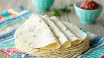

Tortillas

Making your own tortillas
Store bought flour tortillas don't come close to homemade. Nothing beats a warm fresh tortilla loaded up with your favorite fillings!
This simple recipe will guide you step by step through the process of making your very own tortillas using common house hold ingredients.
Ingredients
- water
- flour
- salt
- vegetable oil
steps
- in a bowl mix together the flour and salt
- Add the oil to the flour mixture and mix until you achieve the consistency of wet sand
- Mix in cool water. add a little at a time until you have a ball of dough
- Seperate the dough into balls, then roll them out into disks
- Cook the disks one at a time in a skillett on medium heat. Flip the disk when the bottom starts to brown.
- Remove the cooked disk when the second side browns and youre done! repeat the process for your remaining disks